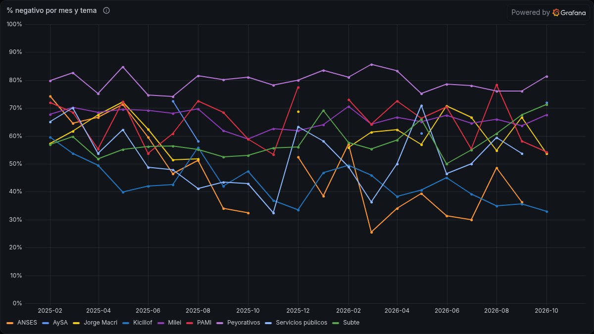

Caso de estudio · NLP en castellanoCase study · Spanish-language NLP
¿De qué se queja la gente en redes, y con qué tono?What do people complain about online, and how angry are they?
Recolecté y analicé automáticamente todos los posts públicos de Bluesky sobre nueve temas argentinos (servicios públicos, transporte, organismos y política) desde enero de 2025. Un modelo de lenguaje clasifica el sentimiento de cada post y yo verifiqué a mano cuánto acierta.I automatically collected and analyzed every public Bluesky post about nine Argentine topics (utilities, transit, public agencies and politics) since January 2025. A language model classifies each post's sentiment, and I checked by hand how often it gets it right.
Cómo funcionaHow it works
Un flujo que corre solo, todas las semanasA pipeline that runs by itself every week
Nadie aprieta un botón: GitHub Actions recolecta los lunes, analiza, carga la base y actualiza el tablero.No one presses a button: GitHub Actions collects on Mondays, analyzes, loads the database and refreshes the dashboard.
API pública de Bluesky, 19 términos de búsqueda, ventanas por día.Bluesky public API, 19 search terms, day-sized windows.
Sin usuarios ni links a perfiles: solo texto, fecha y tema.No usernames or profile links: only text, date and topic.
Modelo de NLP en castellano: sentimiento, emoción y discurso de odio.Spanish NLP model: sentiment, emotion and hate speech.
PostgreSQL con controles de calidad en cada carga.PostgreSQL with data-quality checks on every load.
Tablero público con intervalos de confianza.Public dashboard with confidence intervals.
El modelo, con ejemplos realesThe model, with real examples
Qué dice el modelo, qué dije yoWhat the model said vs. what I said
Posts reales de la muestra, sin autor. Para cada uno: mi etiqueta, la del modelo de NLP (pysentimiento) y la de un modelo de lenguaje grande usado como segunda opinión. La barra muestra cuán seguro estaba el modelo.Real posts from the sample, author removed (kept in the original Spanish). For each one: my label, the NLP model's (pysentimiento), and a large language model's used as a second opinion. The bar shows how confident the model was.
ValidaciónValidation
¿Cuánto le podemos creer?How much can we trust it?
Etiqueté a mano una muestra de 198 posts (22 por tema) sin ver lo que había dicho el modelo, y comparé. Resultado: acierta 7 de cada 10. Es muy bueno detectando enojo y queja, regular con lo neutro, y casi no detecta lo positivo, que además es poco frecuente.I hand-labeled a sample of 198 posts (22 per topic) without seeing the model's answer, then compared. Result: it agrees 7 times out of 10. It is very good at spotting anger and complaints, so-so with neutral posts, and almost blind to positive ones, which are also rare.
Matriz de confusiónConfusion matrix
Filas: mi etiqueta. Columnas: lo que dijo el modelo. La diagonal son los aciertos.Rows: my label. Columns: the model's answer. The diagonal is where they agree.
Ver como tablaView as table
Puntaje F1 por claseF1 score by class
De 0 a 1: combina cuántos encuentra y cuántos acierta. Comparado con un modelo de lenguaje grande (gpt-oss-120b).From 0 to 1: combines how many it finds and how many it gets right. Compared with a large language model (gpt-oss-120b).
Ver como tablaView as table
HallazgosFindings
El agua y el subte enojan más que la políticaWater and the subway draw more anger than politics
Dos de cada tres posts sobre estos temas son negativos y la emoción dominante es el enojo en todos. En los últimos tres meses, AySA (agua) y el subte superan al presidente en negatividad, aunque Milei concentra entre el 80 y el 90 % de la conversación.Two out of three posts on these topics are negative, and anger is the dominant emotion across the board. Over the last three months, AySA (water) and the Buenos Aires subway beat the president on negativity, even though Milei takes 80–90 % of the conversation.
% de posts negativos por tema · últimos 3 meses% negative posts by topic · last 3 months
Al 17 de noviembre de 2026. "Insultos partidarios" es un indicador aparte, armado con palabras peyorativas, y se muestra en gris.As of November 17, 2026. "Partisan slurs" is a separate indicator built from derogatory terms and is shown in gray.
Ver como tablaView as table

LimitacionesLimitations
Lo que este proyecto no diceWhat this project does not claim
No es una encuestaNot a poll
Bluesky no representa a toda la población argentina. Es un complemento para ver tendencias, no una medición de opinión pública. No mide intención de voto.Bluesky does not represent the Argentine population. It is a complement for spotting trends, not a public-opinion measurement. It does not measure voting intention.
El modelo tiene límitesThe model has limits
Falla con la ironía y casi no detecta lo positivo. Por eso solo se publica el % negativo y la validación está a la vista.It struggles with irony and barely detects positive posts. That is why only the % negative is published, and the validation is public.
Temas con poco volumenLow-volume topics
Algunos temas tienen menos de 30 posts por semana: se leen por mes y el tablero lo marca.Some topics get fewer than 30 posts a week: they are read monthly and the dashboard flags it.
Una sola fuenteA single source
Busqué reclamos formales por empresa para cruzarlos, pero los datos abiertos disponibles estaban desactualizados. Quedó fuera del alcance.I looked for formal complaints by company to cross-check, but the available open data was outdated. It was left out of scope.
Para ver másGo deeper